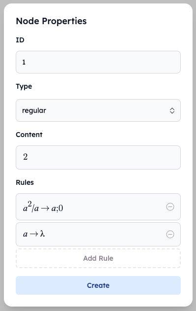
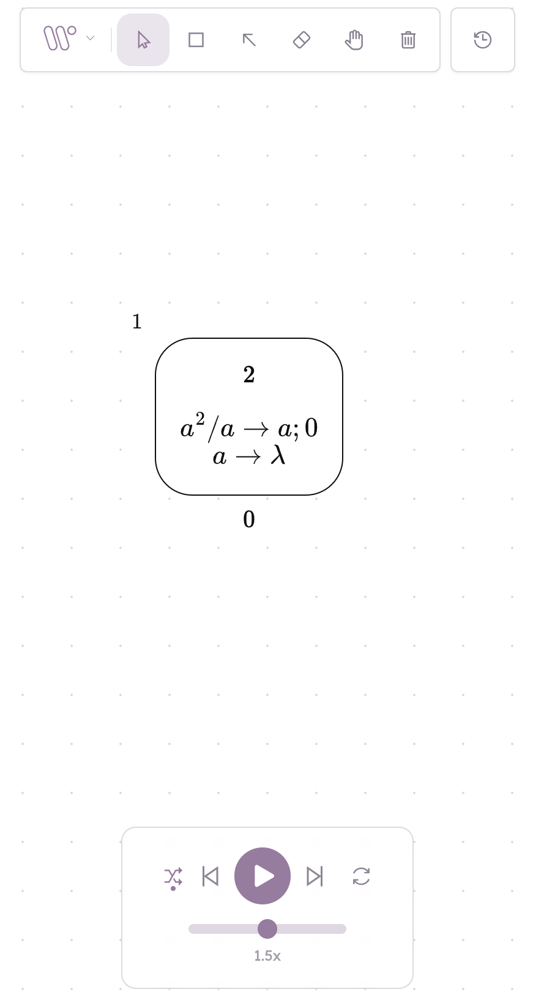
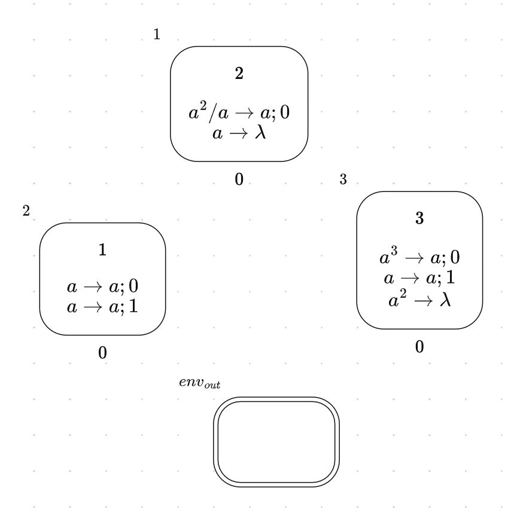
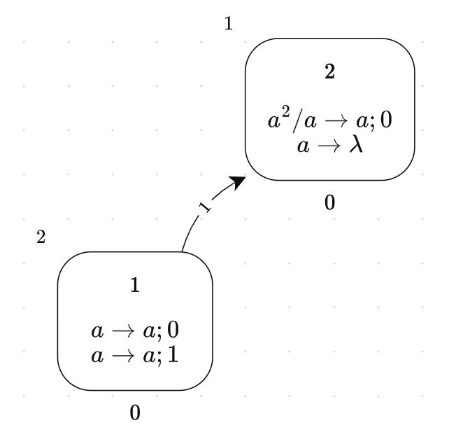
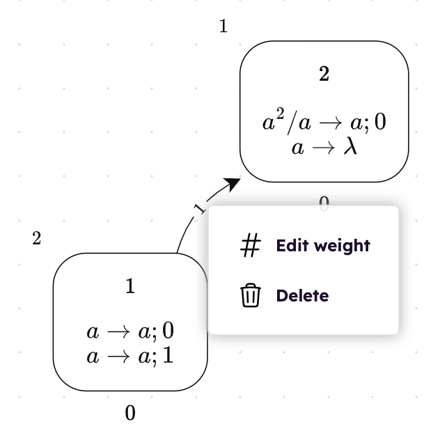
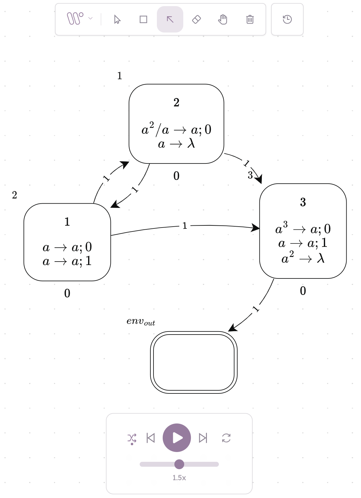
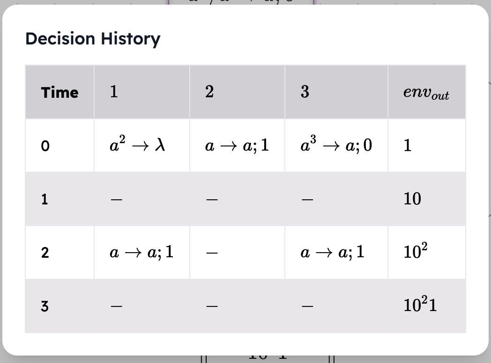
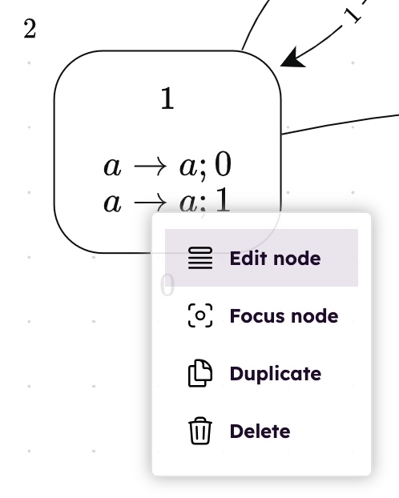
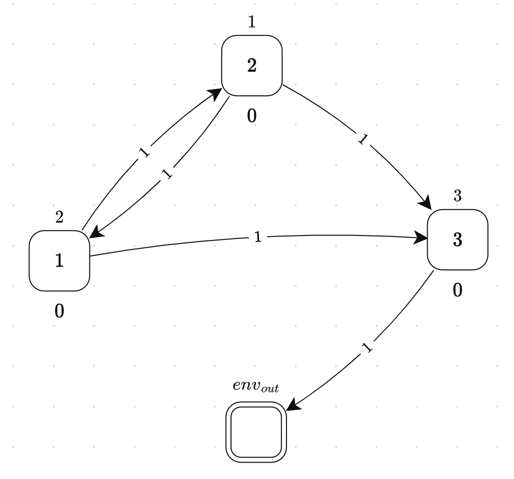
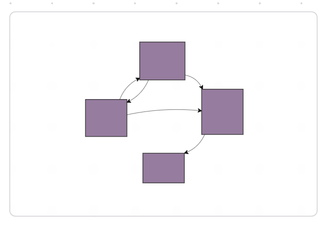

Daryll Ko\(^1\), Francis George C. Cabarle\(^{1,2}\), Ren Tristan A. De La Cruz\(^1\)
February 12, 2024
\(^1\)Dept. of Computer Science, University of the Philippines Diliman,
Quezon city, Philippines, 1101
E-mail: {dlko,fccabarle,radelacruz}@up.edu.ph
\(^2\)Research Group on Natural Computing,
Department of Computer Science and Artificial Intelligence,
I3US, SCORE lab,
Universidad de Sevilla, Avda. Reina Mercedes s/n, 41012, Sevilla, Spain
E-mail: fcabarle@us.es
1 Introduction
The origin of WebSnapse comes from the Snapse simulator [1] with the following
raison d’être: an easy to use and visual simulator for learning about SN P systems.
The simulator WebSnapse v1 (that is, version 1) improves on this “reason for being”
by allowing users to access the software by using only their web browser,
including more animations and features [2]. Unlike Snapse which requires specific
installation depending on the device or operating system, WebSnapse is
immediately accessible for many devices (including portable ones) and operating
systems through their web browsers such as Firefox, Chrome, Safari. Further
improvements were introduced in WebSnapse v2 [3], and finally for the present
tutorial, the current versions of the simulator available at the WebSnapse
page [4]. The interested reader is invited to read the cited works on Snapse
and WebSnapse, with links to the simulators, their source codes, etc. at
[4].
The present work is organised as follows: we briefly recall the definition of SN P
systems (Section 2. In Section 3 we begin the tutorial to the WebSnapse software,
focused on its current version. The tutorial involves going through the process of
creating an SN P system in detail using WebSnapse. A revised and extended version
of the present tutorial is in [5].
2 Preliminaries
A Spiking Neural P (SN P) system from [6] is a tuple \[\Pi = (\{a\}, \sigma _{1}, \sigma _{2}, \dots , \sigma _{n}, syn, in, out),\] where:
\(\{a\}\) is the alphabet used by the system, and \(a\) is the spike symbol.
\(\sigma _{i} = (n_{i}, R_{i})\) is the \(i^{th}\) neuron:
\(n_{i}\) is the number of spikes contained in the neuron.
\(R_{i}\) is the set of rules contained in the neuron. A rule is of the form \[E / a^{c} \rightarrow a^{p}; d,\]
where \(E\) is a regular expression over \(\{a\}\), \(c \ge p \ge 0\), \(c \ge 1\), and \(d \ge 0\). A minor modification
in the usual way of writing rules in the same (neuron) rule set: we
separate rules within the same rule set using vertical bars instead of
commas; for instance we write \[\{a \rightarrow a; 1 \mid a \rightarrow \lambda \}\] instead of \[\{a \rightarrow a; 1, a \rightarrow \lambda \}.\]
\(syn \subseteq \{1, 2, \dots , n\}^{2}\) is the set of synapses, with \((i, i) \notin syn\) for \(1 \le i \le n\).
\(in\) and \(out\) are the sets of input neurons and output neurons, respectively.
The present tutorial assumes some familiarity of the basics (i.e., syntax,
semantics) of SN P systems, such as the chapter dedicated to SN P systems in the
handbook in [7], the tutorial in [8], or a recent survey in [9].
3 Tutorial
To demonstrate the simulation of SN P systems, we will create a greater-than-1
positive integer generator \(\Pi _{\ge 2}\), an SN P system that generates the set \(\{k \mid k \in \mathbb {Z}, k \ge 2\}\).
Formally, we have \[\Pi _{\ge 2} = (\{a\}, \sigma _{1}, \sigma _{2}, \sigma _{3}, syn, in, out),\] where:
We consider two simulators developed at the Algorithms & Complexity Lab from
the University of the Philippines Diliman:
WebSnapse v3 makes use of code that compiles to WebAssembly in order
to efficiently carry out the computations involved when simulating SN P
systems [10].
WebSnapse Reloaded separates the simulator into a client side and
a server side, allowing the user to use separate computers to handle the
displaying and simulation of SN P systems [11]. In this way WebSnapse
Reloaded is also known as WebSnapse CS, for client-server.
For the present tutorial we use WebSnapse Reloaded, as it provides a richer set
of features and a more user-friendly interface. The ideas from using WebSnapse
Reloaded are transferrable to WebSnapse v3, hence we limit the tutorial to just one
simulator. From here onwards we refer to WebSnapse Reloaded as WebSnapse, for
brevity.
The reader is recommended to follow the tutorial sections below by accessing the
WebSnapse simulator directly using the following link:
Simulation of a system in WebSnapse involves two main steps: (1) creating the
system and (2) running the actual simulation of the system.
3.1 Creation
Creating a system can be done in two ways:
1.
Importing or loading an existing JSON file from a previous use of
WebSnapse: by simply using the Load button, see Figure 10.
2.
Using the simulator’s user interface to add neurons, rules, and draw
synapses between these neurons: we describe these steps in more detail
below.
We start by creating \(\Pi _{\ge 2}\) via WebSnapse’s user interface, first adding nodes and then
drawing connections between these nodes.
Adding a node involves three steps:
1.
Selecting the Node tool by clicking it or using the keyboard shortcut N
(Figure 1)
Figure 1: Selecting the Node tool.
2.
Clicking anywhere in the canvas to place the node
3.
Indicating the node’s properties (ID, Type, Content, and Rules) (Figure 2 and
Figure 3):
ID is a unique identifier for the node, indicated using LaTeX (e.g.,
n_{1} for \(n_{1}\), env_{out} for \(env_{out}\)). We recommend giving logical or
conventional identifiers to nodes for clarity.
Type is a convention used in WebSnapse: normally a neuron \(\sigma _{i}\) is indicated
as an input/output neuron via membership in \(in\)/\(out\), respectively. However, in
WebSnapse, \(\sigma _{i}\) is indicated as an input/output neuron via multiple steps:
Setting \(\sigma _{i}\)’s type to regular (not input or output)
Making a new neuron \(\sigma '_{i}\) and setting its type to input/output
Drawing a new synapse \(\sigma '_{i} \rightarrow \sigma _{i}\) (if \(\sigma _{i}\) is an input neuron) or \(\sigma _{i} \rightarrow \sigma '_{i}\) (if \(\sigma _{i}\) is an
output neuron)
The spike count \(n_{i}\) and rule set \(R_{i}\) are indicated just like how the system is
defined. Each rule in \(R_{i}\) is typeset using LaTeX, that is, one types or writes
on the keyboard \rightarrow or \to for \(\rightarrow \) and \lambda for \(\lambda \), among other
conventions.

Figure 2: Editing the new node’s properties. 
Figure 3: Creating a node.
Repeating these steps for each neuron allows us to draw \(\sigma _{1}, \sigma _{2}, \dots , \sigma _{n}\) on the canvas
(Figure 4).

Figure 4: Creating all nodes of \(\Pi _{\ge 2}\).
Adding a synapse involves three similar steps:
1.
Selecting the Edge tool by clicking it or using a keyboard shortcut:
pressing the E key on the keyboard as a shortcut (Figure 5)
Figure 5: Selecting the Edge tool.
2.
Drawing an arc from the synapse’s source node to the synapse’s target
node (Figure 6)

Figure 6: Creating a synapse.
3.
Indicating the synapse’s weight (if necessary; Figure 7 and Figure 8):
WebSnapse automatically creates a synapse with weight \(1\) after the
previous step. To edit the weight, one can right-click on the synapse to
make a context window pop up. Clicking Edit weight makes editing
the synapse’s weight possible.

Figure 7: Right-clicking to open the context window.Figure 8: Editing the edge’s properties.
Repeating these steps for each synapse allows us to draw \(syn\), and as a result \( \Pi _{\ge 2} \), on the
canvas (Figure 9).

Figure 9: Creating all edges of \(\Pi _{\ge 2}\) (and finishing \( \Pi _{\ge 2} \)).
Alternatively, one may create the system by importing a pre-existing JSON file.
This is done by clicking on the W-like icon at the top then clicking Load
(Figure 10).
Figure 10: Load button to import files.
3.2 Simulation
To simulate the system created, we simply click the play button at the bottom of the
page. WebSnapse will then simulate each tick of the system, automatically selecting
necessary rules and updating spike counts.
There are several things one may do to control the simulation (Figure 11):
Figure 11: Simulation controls.
One may click the icon with crossing arrows (leftmost icon) to toggle
between guided and pseudorandom mode. In guided mode, whenever a
neuron is capable of activating more than one rule due to nondeterminism,
WebSnapse allows the user to decide which rule to activate. On the other
hand, in pseudorandom mode, this decision is left to WebSnapse; it will
activate one of these rules at pseudorandom.
One may go one tick forwards or one tick backwards on the global clock of
the system by clicking the icons beside the play button. These icons will
have no effect if the user has not started the simulation (for the backward
button) or if the simulation has finished (for the forward button).
One may click the icon with arrows in a cycle (rightmost icon) to reset
the simulation.
In addition to controlling the simulation and observing how the system behaves,
the user may also open the History menu using the rightmost icon on top
(Figure 12). This will show the rules selected by standard neurons and the contents
of input/output neurons at each time step (Figure 13).
In this way the output of the computation can be taken in two ways: in a “visual”
way by checking the contents of the neuron \(env_{out}\) for instance in Figure 9; in a “textual”
way by looking at the column for \(env_{out}\) in the decision history (Figure 13. Recall at the
start of Section 3 that SN P system \(\Pi _{\geq 2}\) generates, in a nondeterministic way, the
number set \(\{ k \mid k \in \mathbb {Z}, k \geq 2 \}\). In the Decision History from Figure 13 we see that at time step (or row)
3, in the column for \(env_{out}\) is the sequence \(10^21\) corresponding to the spike train for the output:
the distance or interval between the two “1” symbols is 3, thus the output is
\(3 \in \{ k \mid k \in \mathbb {Z}, k \geq 2 \}\).
Figure 12: History button.

Figure 13: Decision history of \( \Pi _{\ge 2} \).
3.3 Editing
Suppose that instead of \(\Pi _{\ge 2}\), we wanted to create a greater-than-three, multiple-of-three
generator \(\Pi _{3k}\), an SN P system that generates the set \(\{3k \mid k \in \mathbb {Z}, k \ge 2\}\). The differences between \(\Pi _{\ge 2}\) and \(\Pi _{3k}\) are
subtle; these differences are highlighted in Table 1.
Table 1: Differences between \(\Pi _{\ge 2}\) and \(\Pi _{3k}\).
Editing a neuron’s contents is done by right-clicking the neuron to open a context
window. Clicking the Edit node option allows one to change a neuron’s spike count
and rule set (Figure 14).

Figure 14: Edit node option in neuron’s context window.
In this situation, only the node contents differ between the two systems. In case
the synapses also need to be edited, the process is largely the same: one right-clicks
the synapse to open a context window, then clicks the Edit weight option to change
the synapse’s weight.
3.4 Extras
There are several quality-of-life features in WebSnapse that may help the user better
understand the system or simulation they are working with. One such feature
is the View button on the bottom-left of the screen, which gives the user
the option to hide the system’s rules, as shown in Figure 15 and Figure
16.
Figure 15: View button.

Figure 16: Initial state of \( \Pi _{\ge 2} \) with only neuron spike counts shown.
This is especially helpful when it comes to larger systems with repeated rulesets,
for which hiding the rules minimizes the visual clutter on the screen. For instance,
the (non)uniform solutions to hard problems in [12] or the homogeneous neurons in
[13, 14]. In relation to this, the minimap on the bottom-right of the screen
(Figure 17) gives the user a bird’s-eye view of the system, which may help with
navigating large systems.

Figure 17: Minimap of \( \Pi _{\ge 2} \).
WebSnapse may be extended beyond system creation and simulation. For
instance, one may incorporate a routine such as homogenization, as discussed in [13].
An implementation of the homogenisation algorithms in [14] is the following: at least
for the WebSnapse v2, work by [15] allows homogenisation using a button click,
so that a system \(\Pi \) may be converted to an equivalent homogeneous system
\(\Pi '\).
Another possibility for SN P systems is to generate space-filling curves, as
discussed in [16] and [17], among others. The robustness of WebSnapse’s codebase
makes relevant extensions and features straightforward.
Of course, a simulator is no good if it cannot correctly simulate the systems it is
given. In WebSnapse’s development, test cases and scripts were created in order to
verify its correctness in both creation and simulation. These test cases found
in [4] may also serve as helpful samples for users new to SN P systems or
WebSnapse.
4 Final Remarks
This tutorial only scratches the surface of what can be done using both SN P systems
and their simulators, but understanding the basic operations and options is
fundamental to creating and simulating more complex systems. The user-friendly
interface and codebase flexibility of WebSnapse (Reloaded or CS) empower
the user to perform these creations and simulations with ease, and to add
extensions or new features to the simulator as they see fit. By making good use of
simulators such as WebSnapse, researchers are equipped with more guidance and
confidence towards exploring the world of SN P systems and P systems in
general.
Another way to represent SN P systems and related models is the formal
framework from [18, 19] which we hope to support in WebSnapse. Further directions
and extensions for WebSnapse, with related theories and tools, are provided in [20]
which is a revised and extended version of [21]. Since not only the WebSnapse
applications but also their source codes are available in the WebSnapse page in [4],
our hope is that more people can use, extend, or improve WebSnapse for their own
research. Our group is open to collaborations!
Acknowledgements
Support for F.G.C. Cabarle: the Dean Ruben A. Garcia PCA, and Project No.
222211 ORG from the Office of the Vice Chancellor for Research and Development,
both from UP Diliman; the QUAL21 008 USE project (PAIDI 2020 and FEDER
2014-2020 funds). The authors are also thankful to Prof. Gexiang Zhang for
suggesting this tutorial, and to the IMCS Bulletin for allowing us to share our
work.
References
[1]A. D. C. Fernandez, R. M. Fresco, F. G. C. Cabarle, R. T. A. de la
Cruz, I. C. H. Macababayao, K. J. Ballesteros, and H. N. Adorna,
“Snapse: A visual tool for spiking neural P systems,” Processes, vol. 9,
no. 1, 2021.
[2]A. G. S. Dupaya, A. C. A. P. Galano, F. G. C. Cabarle, R. T.
De La Cruz, K. J. Ballesteros, and P. P. L. Lazo, “A web-based visual
simulator for spiking neural P systems,” Journal of Membrane Computing,
vol. 4, no. 1, pp. 21–40, 2022.
[3]N. Cruel, C. Quirim, and F. G. C. Cabarle, “Websnapse v2.0:
Enhancing and extending the visual and web-based simulator of spiking
neural P systems,” in Pre-proceedings of the 11th Asian Conference on
Membrane Computing, Quezon City, Philippines, pp. 146–166, September
2022.
[5]D. Ko, F. G. C. Cabarle, and R. T. De L Cruz, “WebSnapse
Tutorial: A Hands-On Approach for Web and Visual Simulations of Spiking
Neural P Systems,” in (submitted) Bulletin of the International Membrane
Computing Society.
[6]M. Ionescu, Gh. Păun, and T. Yokomori, “Spiking neural P systems,”
Fundamenta informaticae, vol. 71, no. 2, 3, pp. 279–308, 2006.
[7] Gh. Păun, G. Rozenberg, and A. Salomaa, eds., The Oxford
Handbook of Membrane Computing. Oxford Univeristy Press, 2010.
[8]Gh. Păun, “Spiking neural P systems: A tutorial,” Bull. Eur. Assoc.
Theor. Comput. Sci., vol. 91, pp. 145–159, Feb 2007.
[9]A. Leporati, G. Mauri, and C. Zandron, “Spiking neural P systems:
main ideas and results,” Natural Computing, pp. 1–21, 2022.
[10]L. Gallos, J. L. Sotto, F. G. C. Cabarle, and H. N. Adorna,
“Websnapse v3: Optimization of the web-based simulator of spiking
neural p system using matrix representation, webassembly and other
tools,” in Pre-proc. 12th Workshop on Computation: Theory and Practice
(WCTP2023), 4 to 6 December 2023, Chitose-city, Hokkaido, Japan
(S. Hagihara, S. ya Nishizaki, M. Numao, J. Caro, and M. T. Suarez,
eds.), pp. 492–510, 2023.
[11]M. Gulapa, J. S. Luzada, F. G. C. Cabarle, H. Adorna, K. Buño,
and D. Ko,
“Websnapse reloaded: The next-generation spiking neural p system visual
simulator using client-server architecture,” in Pre-proc. 12th Workshop on
Computation: Theory and Practice (WCTP2023), 4 to 6 December 2023,
Chitose-city, Hokkaido, Japan (S. Hagihara, S. ya Nishizaki, M. Numao,
J. Caro, and M. T. Suarez, eds.), pp. 511–536, 2023.
[12]A. Leporati, G. Mauri, C. Zandron, G. Păun,
and M. J. Pérez-Jiménez, “Uniform solutions to sat and subset sum by
spiking neural P systems,” Natural computing, vol. 8, no. 4, pp. 681–702,
2009.
[13]X. Zeng, X. Zhang, and L. Pan, “Homogeneous spiking neural P
systems,” Fundamenta Informaticae, vol. 97, no. 1-2, pp. 275–294, 2009.
[14]R. T. A. de la Cruz, F. G. C. Cabarle, and H. N. Adorna, “Steps
toward a homogenization procedure for spiking neural p systems,”
Theoretical Computer Science, vol. 981, p. 114250, 2024.
[15]T. Llanto, J. Amador, F. G. C. Cabarle, R. T. De L Cruz, and
D. Ko, “Analyses and Implementation of a Homogenisation Algorithm for
Spiking Neural P Systems in the WebSnapse Tool,” in (submitted) Bulletin
of the International Membrane Computing Society.
[16]J. M. Menina, “Spiking neural p systems in generating finite
approximations of hilbert and sierpiński curves.” CS 199 Report,
Department of Computer Science, University of the Philippines Diliman,
2022.
[17]A. Basista and D. Caloracan, “Generating approximations of the peano
curve using an sn p system and an extension of websnapse.” CS 199 Report,
Department of Computer Science, University of the Philippines Diliman,
2022.
[18]S. Verlan, R. Freund, A. Alhazov, S. Ivanov, and L. Pan, “A formal
framework for spiking neural p systems,” Journal of Membrane Computing,
vol. 2, no. 4, pp. 355–368, 2020.
[19]S. Verlan and G. Zhang, “A tutorial on the formal framework for
spiking neural P systems,” Natural Computing, pp. 1–14, 2022.
[20]F. G. C. Cabarle, “Thinking About Spiking Neural P Systems: Some
Theories, Tools, and Research Topics,” (submitted).
[21]F. G. C. Cabarle, “Some thoughts on notions and tools for investigating
SN P systems (extended abstract),” in Pre-proceedings of the 11th Asian
Conference on Membrane Computing, Quezon City, Philippines, pp. 1–4,
September 2022.